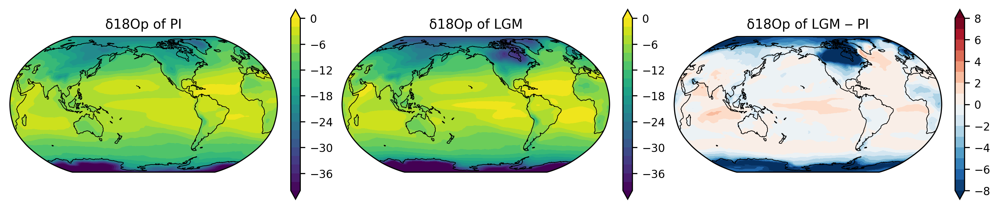
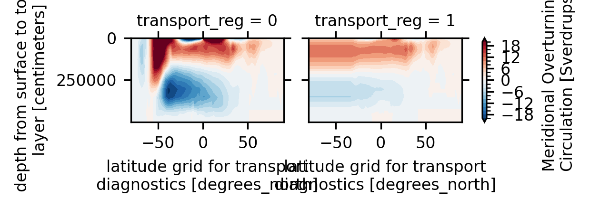
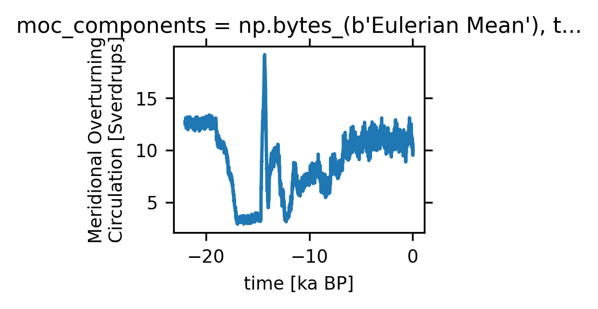
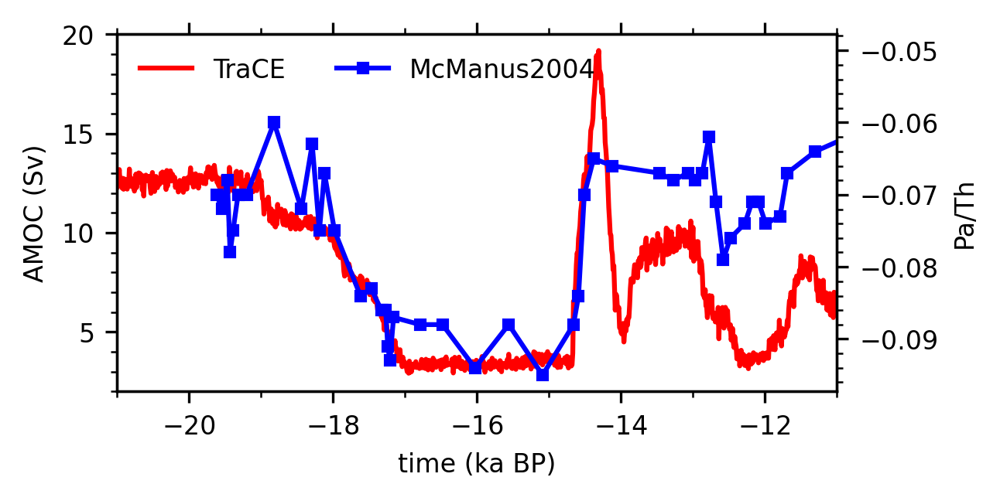

6. More Info: iCESM and iTRACE Analysis#
Tutorials at the 2026 paleoCAMP | June 15–June 29, 2026
Jiang Zhu
jiangzhu@ucar.edu
Climate & Global Dynamics Laboratory
NSF National Center for Atmospheric Research
More information and examples to demonstrate iCESM and iTRACE analysis using the NCAR JupyterHub
Compute and plot precipitation δ18O
Plot AMOC from TraCE and compare with McManus et al. 2004
Postprocess annual mean δ18O from iTRACE
Time to go through: 15 minutes
Load Python packages
import os
import glob
from datetime import timedelta
import xarray as xr
import numpy as np
import pandas as pd
import matplotlib as mpl
import matplotlib.pyplot as plt
import cartopy.crs as ccrs
from cartopy.util import add_cyclic_point
# xesmf is used for regridding ocean output
import xesmf
import warnings
warnings.filterwarnings("ignore")
Compute and plot precipitation δ18O#
We define a function to compute precipitation δ18O
def calculate_d18Op(ds):
"""
Compute precipitation δ18O with iCESM output
Parameters
ds: xarray.Dataset contains necessary variables
Returns
ds: xarray.Dataset with δ18O added
"""
# convective & large-scale rain and snow, respectively
p16O = ds.PRECRC_H216Or + ds.PRECSC_H216Os + ds.PRECRL_H216OR + ds.PRECSL_H216OS # total mass of water containing oxygen-16
p18O = ds.PRECRC_H218Or + ds.PRECSC_H218Os + ds.PRECRL_H218OR + ds.PRECSL_H218OS # total mass of water containing oxygen-18
p16O = xr.where(p16O > 1.E-18, p16O, 1.E-18) # make sure there are no tiny values that will blow up the ratio calculation
p18O = xr.where(p16O > 1.E-18, p18O, 1.E-18) # keep consistency with the above treatment for p16O
d18O = (p18O / p16O - 1.0) * 1000.0 # calculate the delta value - the ratio of (18O/16O - 1) * 1000!
# store the new variables as xarray variables
ds['d18O'] = d18O
ds['p18O'] = p18O
ds['p16O'] = p16O
return ds
Figure out the file names
!ls /glade/campaign/cgd/ppc/jiangzhu/iCESM1.2/b.e12.B1850C5.f19_g16.iPI.01/atm/proc/tseries/month_1/*PRECRC_H218Or*
!ls /glade/campaign/cgd/ppc/jiangzhu/iCESM1.2/b.e12.B1850C5.f19_g16.i21ka.03/atm/proc/tseries/month_1/*PRECRC_H218Or*
/glade/campaign/cgd/ppc/jiangzhu/iCESM1.2/b.e12.B1850C5.f19_g16.iPI.01/atm/proc/tseries/month_1/b.e12.B1850C5.f19_g16.iPI.01.cam.h0.PRECRC_H218Or.0001-0900.nc
/glade/campaign/cgd/ppc/jiangzhu/iCESM1.2/b.e12.B1850C5.f19_g16.i21ka.03/atm/proc/tseries/month_1/b.e12.B1850C5.f19_g16.i21ka.03.cam.h0.PRECRC_H218Or.0001-0900.cal_adj.nc
/glade/campaign/cgd/ppc/jiangzhu/iCESM1.2/b.e12.B1850C5.f19_g16.i21ka.03/atm/proc/tseries/month_1/b.e12.B1850C5.f19_g16.i21ka.03.cam.h0.PRECRC_H218Or.0001-0900.nc
We need to read in all these variables
vnames = ['PRECC', 'PRECL',
'PRECRC_H216Or', 'PRECSC_H216Os', 'PRECRL_H216OR', 'PRECSL_H216OS',
'PRECRC_H218Or', 'PRECSC_H218Os', 'PRECRL_H218OR', 'PRECSL_H218OS']
storage_dir = '/glade/campaign/cgd/ppc/jiangzhu/iCESM1.2/'
hist_dir = '/atm/proc/tseries/month_1/'
case_pre = 'b.e12.B1850C5.f19_g16.iPI.01'
case_lgm = 'b.e12.B1850C5.f19_g16.i21ka.03'
fnames_pre = []
fnames_lgm = []
for vname in vnames:
fname = glob.glob(storage_dir + case_pre + hist_dir + '*' + vname + '.0001-0900.nc')
fnames_pre.extend(fname)
fname = glob.glob(storage_dir + case_lgm + hist_dir + '*' + vname + '.0001-0900.nc')
fnames_lgm.extend(fname)
print(*fnames_pre, sep='\n')
print(*fnames_lgm, sep='\n')
/glade/campaign/cgd/ppc/jiangzhu/iCESM1.2/b.e12.B1850C5.f19_g16.iPI.01/atm/proc/tseries/month_1/b.e12.B1850C5.f19_g16.iPI.01.cam.h0.PRECC.0001-0900.nc
/glade/campaign/cgd/ppc/jiangzhu/iCESM1.2/b.e12.B1850C5.f19_g16.iPI.01/atm/proc/tseries/month_1/b.e12.B1850C5.f19_g16.iPI.01.cam.h0.PRECL.0001-0900.nc
/glade/campaign/cgd/ppc/jiangzhu/iCESM1.2/b.e12.B1850C5.f19_g16.iPI.01/atm/proc/tseries/month_1/b.e12.B1850C5.f19_g16.iPI.01.cam.h0.PRECRC_H216Or.0001-0900.nc
/glade/campaign/cgd/ppc/jiangzhu/iCESM1.2/b.e12.B1850C5.f19_g16.iPI.01/atm/proc/tseries/month_1/b.e12.B1850C5.f19_g16.iPI.01.cam.h0.PRECSC_H216Os.0001-0900.nc
/glade/campaign/cgd/ppc/jiangzhu/iCESM1.2/b.e12.B1850C5.f19_g16.iPI.01/atm/proc/tseries/month_1/b.e12.B1850C5.f19_g16.iPI.01.cam.h0.PRECRL_H216OR.0001-0900.nc
/glade/campaign/cgd/ppc/jiangzhu/iCESM1.2/b.e12.B1850C5.f19_g16.iPI.01/atm/proc/tseries/month_1/b.e12.B1850C5.f19_g16.iPI.01.cam.h0.PRECSL_H216OS.0001-0900.nc
/glade/campaign/cgd/ppc/jiangzhu/iCESM1.2/b.e12.B1850C5.f19_g16.iPI.01/atm/proc/tseries/month_1/b.e12.B1850C5.f19_g16.iPI.01.cam.h0.PRECRC_H218Or.0001-0900.nc
/glade/campaign/cgd/ppc/jiangzhu/iCESM1.2/b.e12.B1850C5.f19_g16.iPI.01/atm/proc/tseries/month_1/b.e12.B1850C5.f19_g16.iPI.01.cam.h0.PRECSC_H218Os.0001-0900.nc
/glade/campaign/cgd/ppc/jiangzhu/iCESM1.2/b.e12.B1850C5.f19_g16.iPI.01/atm/proc/tseries/month_1/b.e12.B1850C5.f19_g16.iPI.01.cam.h0.PRECRL_H218OR.0001-0900.nc
/glade/campaign/cgd/ppc/jiangzhu/iCESM1.2/b.e12.B1850C5.f19_g16.iPI.01/atm/proc/tseries/month_1/b.e12.B1850C5.f19_g16.iPI.01.cam.h0.PRECSL_H218OS.0001-0900.nc
/glade/campaign/cgd/ppc/jiangzhu/iCESM1.2/b.e12.B1850C5.f19_g16.i21ka.03/atm/proc/tseries/month_1/b.e12.B1850C5.f19_g16.i21ka.03.cam.h0.PRECC.0001-0900.nc
/glade/campaign/cgd/ppc/jiangzhu/iCESM1.2/b.e12.B1850C5.f19_g16.i21ka.03/atm/proc/tseries/month_1/b.e12.B1850C5.f19_g16.i21ka.03.cam.h0.PRECL.0001-0900.nc
/glade/campaign/cgd/ppc/jiangzhu/iCESM1.2/b.e12.B1850C5.f19_g16.i21ka.03/atm/proc/tseries/month_1/b.e12.B1850C5.f19_g16.i21ka.03.cam.h0.PRECRC_H216Or.0001-0900.nc
/glade/campaign/cgd/ppc/jiangzhu/iCESM1.2/b.e12.B1850C5.f19_g16.i21ka.03/atm/proc/tseries/month_1/b.e12.B1850C5.f19_g16.i21ka.03.cam.h0.PRECSC_H216Os.0001-0900.nc
/glade/campaign/cgd/ppc/jiangzhu/iCESM1.2/b.e12.B1850C5.f19_g16.i21ka.03/atm/proc/tseries/month_1/b.e12.B1850C5.f19_g16.i21ka.03.cam.h0.PRECRL_H216OR.0001-0900.nc
/glade/campaign/cgd/ppc/jiangzhu/iCESM1.2/b.e12.B1850C5.f19_g16.i21ka.03/atm/proc/tseries/month_1/b.e12.B1850C5.f19_g16.i21ka.03.cam.h0.PRECSL_H216OS.0001-0900.nc
/glade/campaign/cgd/ppc/jiangzhu/iCESM1.2/b.e12.B1850C5.f19_g16.i21ka.03/atm/proc/tseries/month_1/b.e12.B1850C5.f19_g16.i21ka.03.cam.h0.PRECRC_H218Or.0001-0900.nc
/glade/campaign/cgd/ppc/jiangzhu/iCESM1.2/b.e12.B1850C5.f19_g16.i21ka.03/atm/proc/tseries/month_1/b.e12.B1850C5.f19_g16.i21ka.03.cam.h0.PRECSC_H218Os.0001-0900.nc
/glade/campaign/cgd/ppc/jiangzhu/iCESM1.2/b.e12.B1850C5.f19_g16.i21ka.03/atm/proc/tseries/month_1/b.e12.B1850C5.f19_g16.i21ka.03.cam.h0.PRECRL_H218OR.0001-0900.nc
/glade/campaign/cgd/ppc/jiangzhu/iCESM1.2/b.e12.B1850C5.f19_g16.i21ka.03/atm/proc/tseries/month_1/b.e12.B1850C5.f19_g16.i21ka.03.cam.h0.PRECSL_H218OS.0001-0900.nc
%%time
ds_pre = xr.open_mfdataset(fnames_pre, parallel=True,
data_vars='minimal',
coords='minimal',
compat='override',
chunks={'time':12}).isel(time=slice(-120, None))
ds_lgm = xr.open_mfdataset(fnames_lgm, parallel=True,
data_vars='minimal',
coords='minimal',
compat='override',
chunks={'time':12}).isel(time=slice(-120, None))
CPU times: user 2.05 s, sys: 586 ms, total: 2.64 s
Wall time: 10.4 s
ds_pre = calculate_d18Op(ds_pre)
ds_lgm = calculate_d18Op(ds_lgm)
ds_pre
<xarray.Dataset> Size: 86MB
Dimensions: (lev: 30, ilev: 31, slat: 95, lat: 96, time: 120, nbnd: 2,
lon: 144, slon: 144)
Coordinates:
* lev (lev) float64 240B 3.643 7.595 14.36 ... 957.5 976.3 992.6
* ilev (ilev) float64 248B 2.255 5.032 10.16 ... 967.5 985.1 1e+03
* slat (slat) float64 760B -89.05 -87.16 -85.26 ... 87.16 89.05
* lat (lat) float64 768B -90.0 -88.11 -86.21 ... 86.21 88.11 90.0
* time (time) object 960B 0891-02-01 00:00:00 ... 0901-01-01 00:0...
* lon (lon) float64 1kB 0.0 2.5 5.0 7.5 ... 350.0 352.5 355.0 357.5
* slon (slon) float64 1kB -1.25 1.25 3.75 6.25 ... 351.2 353.8 356.2
Dimensions without coordinates: nbnd
Data variables: (12/44)
hyam (lev) float64 240B dask.array<chunksize=(30,), meta=np.ndarray>
hybm (lev) float64 240B dask.array<chunksize=(30,), meta=np.ndarray>
hyai (ilev) float64 248B dask.array<chunksize=(31,), meta=np.ndarray>
hybi (ilev) float64 248B dask.array<chunksize=(31,), meta=np.ndarray>
P0 float64 8B ...
w_stag (slat) float64 760B dask.array<chunksize=(95,), meta=np.ndarray>
... ...
PRECSC_H218Os (time, lat, lon) float32 7MB dask.array<chunksize=(12, 96, 144), meta=np.ndarray>
PRECRL_H218OR (time, lat, lon) float32 7MB dask.array<chunksize=(12, 96, 144), meta=np.ndarray>
PRECSL_H218OS (time, lat, lon) float32 7MB dask.array<chunksize=(12, 96, 144), meta=np.ndarray>
d18O (time, lat, lon) float32 7MB dask.array<chunksize=(12, 96, 144), meta=np.ndarray>
p18O (time, lat, lon) float32 7MB dask.array<chunksize=(12, 96, 144), meta=np.ndarray>
p16O (time, lat, lon) float32 7MB dask.array<chunksize=(12, 96, 144), meta=np.ndarray>
Attributes:
Conventions: CF-1.0
source: CAM
case: b.e12.B1850C5.f19_g16.iPI.01
title: UNSET
logname: jiangzhu
host: r5i1n15
Version: $Name$
revision_Id: $Id$
initial_file: b.ie12.B1850C5CN.f19_g16.09.cam.i.0401-01-01-00000.nc
topography_file: /glade/p/cesmdata/cseg/inputdata/atm/cam/topo/USGS-gtop...# Save netcdf data
# ds_pre.to_netcdf('dataset_with_d18Op.nc')
d18Op_pre = ds_pre.d18O.mean('time')
d18Op_lgm = ds_lgm.d18O.mean('time')
# Sometimes, it is preferred to use the precipitation-amount weighted d18O
#d18Op_pre = ds_pre.d18O.weighted(ds_pre.p16O).mean('time')
d18Op_pre
<xarray.DataArray 'd18O' (lat: 96, lon: 144)> Size: 55kB
dask.array<mean_agg-aggregate, shape=(96, 144), dtype=float32, chunksize=(96, 144), chunktype=numpy.ndarray>
Coordinates:
* lat (lat) float64 768B -90.0 -88.11 -86.21 -84.32 ... 86.21 88.11 90.0
* lon (lon) float64 1kB 0.0 2.5 5.0 7.5 10.0 ... 350.0 352.5 355.0 357.5
Attributes:
units: m/s
cell_methods: time: meanfig, axes = plt.subplots(1, 3,
figsize=(10, 2),
subplot_kw={'projection': ccrs.Robinson(central_longitude=210)},
constrained_layout=True)
axes = axes.ravel()
lon = d18Op_pre.lon
lat = d18Op_pre.lat
ax = axes[0]
var_new, lon_new = add_cyclic_point(d18Op_pre, lon)
p0 = ax.contourf(lon_new, lat, var_new,
levels=np.linspace(-40, 0, 21),
extend='both',
transform=ccrs.PlateCarree())
plt.colorbar(p0, ax=ax)
ax.set_title("δ18Op of PI")
ax = axes[1]
var_new, lon_new = add_cyclic_point(d18Op_lgm, lon)
p1 = ax.contourf(lon_new, lat, var_new,
levels=np.linspace(-40, 0, 21),
extend='both',
transform=ccrs.PlateCarree())
plt.colorbar(p1, ax=ax)
ax.set_title("δ18Op of LGM")
ax = axes[2]
var_diff = d18Op_lgm - d18Op_pre
var_new, lon_new = add_cyclic_point(var_diff, lon)
p2 = ax.contourf(lon_new, lat, var_new,
cmap='RdBu_r',
levels=np.linspace(-8, 8, 17),
extend='both',
transform=ccrs.PlateCarree())
plt.colorbar(p2, ax=ax)
ax.set_title("δ18Op of LGM ‒ PI")
for ax in axes:
ax.set_global()
ax.coastlines(linewidth=0.5)

Plot AMOC from TraCE and compare with McManus et al. 2004#
TraCE data is directly accessible on NCAR machines:
/glade/campaign/cesm/community/palwg/TraCE/TraCE-Main
file = '/glade/campaign/cesm/community/palwg/TraCE/TraCE-Main/ocn/proc/tavg/decadal/trace.01-36.22000BP.pop.MOC.22000BP_decavg_400BCE.nc'
ds = xr.open_dataset(file)
ds
<xarray.Dataset> Size: 49MB
Dimensions: (nlat: 116, nlon: 100, time: 2204, transport_reg: 2,
moc_comp: 1, moc_z: 26, lat_aux_grid: 105, z_t: 25,
z_w: 25, transport_comp: 3)
Coordinates:
* time (time) float64 18kB -22.0 -21.99 -21.98 ... 0.02 0.03
* moc_z (moc_z) float32 104B 0.0 800.0 ... 4.503e+05 5e+05
* lat_aux_grid (lat_aux_grid) float32 420B -80.26 -78.73 ... 90.0
* z_t (z_t) float32 100B 400.0 1.222e+03 ... 4.751e+05
* z_w (z_w) float32 100B 0.0 800.0 ... 4.007e+05 4.503e+05
TLAT (nlat, nlon) float32 46kB ...
TLONG (nlat, nlon) float32 46kB ...
ULAT (nlat, nlon) float32 46kB ...
ULONG (nlat, nlon) float32 46kB ...
moc_components (moc_comp) |S256 256B ...
transport_regions (transport_reg) |S256 512B ...
Dimensions without coordinates: nlat, nlon, transport_reg, moc_comp,
transport_comp
Data variables: (12/51)
ANGLE (nlat, nlon) float32 46kB ...
ANGLET (nlat, nlon) float32 46kB ...
DXT (nlat, nlon) float32 46kB ...
DXU (nlat, nlon) float32 46kB ...
DYT (nlat, nlon) float32 46kB ...
DYU (nlat, nlon) float32 46kB ...
... ...
sea_ice_salinity float64 8B ...
sflux_factor float64 8B ...
sound float64 8B ...
stefan_boltzmann float64 8B ...
transport_components (transport_comp) |S256 768B ...
vonkar float64 8B ...
Attributes:
title: b30.22_0kaDVT
contents: Diagnostic and Prognostic Variables
source: POP, the NCAR/CSM Ocean Component
revision: $Name: ccsm3_0_1_beta22 $
calendar: All years have exactly 365 days.
conventions: CF-1.0; http://www.cgd.ucar.edu/cms/eaton/netc...
start_time: This dataset was created on 2007-07-29 at 23:1...
cell_methods: cell_methods = time: mean ==> the variable val...
history: Fri Nov 8 22:51:40 2013: /glade/apps/opt/nco/...
nco_openmp_thread_number: 1
NCO: 4.3.2Meridional Overturning Circulation is MOC, a 5-dimensional variable#
Dimension
transport_reghas two values, 0 or 1, which means MOC value for the Global Ocean or the Atlantic Ocean, respectively. The corresponding coordinatetransport_regionshas the full names: (1) Global Ocean - Marginal Seas and (2) Atlantic Ocean + Labrador Sea + GIN Sea + Arctic Ocean.Dimension
moc_comphas one value, 0, which means that the MOC values are the total transport. Note that potentially the model could write out more components: such as (1) Total, (2) Eulerian-Mean Advection, and (3) Eddy-Induced Advection (bolus) + Diffusion. See the corresponding coordinatemoc_componentsto see more.Dimension
moc_zis the depth in centimeters.Dimension
lat_aux_gridis the latitude in degrees north.
ds.MOC
<xarray.DataArray 'MOC' (time: 2204, transport_reg: 2, moc_comp: 1, moc_z: 26,
lat_aux_grid: 105)> Size: 48MB
[12033840 values with dtype=float32]
Coordinates:
* time (time) float64 18kB -22.0 -21.99 -21.98 ... 0.02 0.03
* moc_z (moc_z) float32 104B 0.0 800.0 ... 4.503e+05 5e+05
* lat_aux_grid (lat_aux_grid) float32 420B -80.26 -78.73 ... 88.38 90.0
moc_components (moc_comp) |S256 256B ...
transport_regions (transport_reg) |S256 512B ...
Dimensions without coordinates: transport_reg, moc_comp
Attributes:
long_name: Meridional Overturning Circulation
units: Sverdrupsds.MOC.transport_reg.values
array([0, 1])
ds.transport_regions.values
array([b'Global Ocean - Marginal Seas',
b'Atlantic Ocean + Labrador Sea + GIN Sea + Arctic Ocean'],
dtype='|S256')
ds.MOC.moc_comp.values
array([0])
ds.transport_components.values
array([b'Total', b'Eulerian-Mean Advection',
b'Eddy-Induced Advection (bolus) + Diffusion'], dtype='|S256')
The left and right plots are the global mean and Atlantic MOC, respectively#
ds.MOC.isel(time=slice(0, 10), moc_comp=0).mean('time').plot.contourf(
size=1.5, x='lat_aux_grid', y='moc_z', col='transport_reg',
levels=np.linspace(-20, 20, 21))
plt.gca().invert_yaxis()

Again, transport_reg=1 means Atlantic and moc_comp=0 means the total transport#
amoc = ds.MOC.isel(transport_reg=1, moc_comp=0)
amoc
<xarray.DataArray 'MOC' (time: 2204, moc_z: 26, lat_aux_grid: 105)> Size: 24MB
[6016920 values with dtype=float32]
Coordinates:
* time (time) float64 18kB -22.0 -21.99 -21.98 ... 0.02 0.03
* moc_z (moc_z) float32 104B 0.0 800.0 ... 4.503e+05 5e+05
* lat_aux_grid (lat_aux_grid) float32 420B -80.26 -78.73 ... 88.38 90.0
moc_components |S256 256B ...
transport_regions |S256 256B b'Atlantic Ocean + Labrador Sea + GIN Sea +...
Attributes:
long_name: Meridional Overturning Circulation
units: SverdrupsWe define AMOC time series as the maximum over the North Atlantic and beneath a depth of 500 m (to avoid the wind-driven cell)#
amoc_ts = amoc.sel(moc_z=slice(50000, 500000),
lat_aux_grid=slice(0, 90)).max(('moc_z', 'lat_aux_grid'))
amoc_ts.plot(size=1.5)
[<matplotlib.lines.Line2D at 0x14680969b9d0>]

Load the McManus et al. (2004) data from NOAA#
McManus04 = 'https://www.ncei.noaa.gov/pub/data/paleo/paleocean/sediment_files/complete/o326-gc5-tab.txt'
pa_th = pd.read_table(McManus04, header=37)
# Replace missing values
pa_th = pa_th[pa_th["pa/th238"] != -999].reset_index(drop=True)
pa_th.head()
| depth | calyrBP | pa/th232 | pa/th232.err | pa/th238 | pa/th238.err | d18Og.infla | Unnamed: 7 | |
|---|---|---|---|---|---|---|---|---|
| 0 | -999 | 100 | 0.054 | 0.002 | 0.055 | 0.002 | -999.00 | NaN |
| 1 | -999 | 480 | 0.054 | 0.002 | 0.054 | 0.002 | -999.00 | NaN |
| 2 | -999 | 960 | 0.057 | 0.004 | 0.057 | 0.004 | 0.66 | NaN |
| 3 | -999 | 1430 | 0.054 | 0.002 | 0.054 | 0.002 | -999.00 | NaN |
| 4 | -999 | 1910 | 0.055 | 0.002 | 0.055 | 0.002 | 0.63 | NaN |
# Change the time to be consistent with TraCE
pa_th['time'] = pa_th['calyrBP '] / -1000.0
pa_th.head()
| depth | calyrBP | pa/th232 | pa/th232.err | pa/th238 | pa/th238.err | d18Og.infla | Unnamed: 7 | time | |
|---|---|---|---|---|---|---|---|---|---|
| 0 | -999 | 100 | 0.054 | 0.002 | 0.055 | 0.002 | -999.00 | NaN | -0.10 |
| 1 | -999 | 480 | 0.054 | 0.002 | 0.054 | 0.002 | -999.00 | NaN | -0.48 |
| 2 | -999 | 960 | 0.057 | 0.004 | 0.057 | 0.004 | 0.66 | NaN | -0.96 |
| 3 | -999 | 1430 | 0.054 | 0.002 | 0.054 | 0.002 | -999.00 | NaN | -1.43 |
| 4 | -999 | 1910 | 0.055 | 0.002 | 0.055 | 0.002 | 0.63 | NaN | -1.91 |
Plot time series#
fig, ax = plt.subplots(figsize=(4, 2))
# Plot the AMOC time series in TraCE
ax.plot(amoc_ts.time, amoc_ts, 'red',
label='TraCE')
ax.set_xlim([-21, -11])
ax.set_ylim([2, 20])
ax.set_xlabel('time (ka BP)')
ax.set_ylabel('AMOC (Sv)')
ax.xaxis.set_major_locator(plt.MultipleLocator(2))
ax.xaxis.set_minor_locator(plt.MultipleLocator(1))
ax.yaxis.set_major_locator(plt.MultipleLocator(5))
ax.yaxis.set_minor_locator(plt.MultipleLocator(1))
# Plot the Pa/Th time series in McManus et al. (2004)
ax2 = ax.twinx()
ax2.plot(pa_th['time'], pa_th['pa/th238']*-1,
'blue',
marker='s', markersize=3,
label='McManus2004')
ax2.set_ylabel('Pa/Th')
ax2.yaxis.set_major_locator(plt.MultipleLocator(0.01))
ax2.yaxis.set_minor_locator(plt.MultipleLocator(0.002))
# Add a legend
lh1, ll1 = ax.get_legend_handles_labels()
lh2, ll2 = ax2.get_legend_handles_labels()
leg = ax.legend(lh1+lh2, ll1+ll2, frameon=False,
loc='upper left', ncol=2, fontsize=8)

Postprocess annual mean δ18O from iTRACE#
Author: Jiang Zhu and Chengfei He
import warnings
warnings.filterwarnings("ignore")
import os
import xarray as xr
import numpy as np
from glob import glob
import re
from ncar_jobqueue import NCARCluster
from distributed import Client
Request 100 CPUs#
num_jobs = 10
cluster = NCARCluster(
cores=num_jobs, memory='4GB',
interface='mgt')
cluster.scale(jobs=num_jobs)
client = Client(cluster)
client
Client
Client-7c982314-6a07-11f1-8000-10ffe07c1a6c
| Connection method: Cluster object | Cluster type: dask_jobqueue.PBSCluster |
| Dashboard: https://jupyterhub.hpc.ucar.edu/stable/user/jiangzhu/proxy/8787/status |
Cluster Info
PBSCluster
4cafb6c9
| Dashboard: https://jupyterhub.hpc.ucar.edu/stable/user/jiangzhu/proxy/8787/status | Workers: 0 |
| Total threads: 0 | Total memory: 0 B |
Scheduler Info
Scheduler
Scheduler-b977979d-0109-4b9c-9875-1c52a918720e
| Comm: tcp://10.18.206.68:37803 | Workers: 0 |
| Dashboard: https://jupyterhub.hpc.ucar.edu/stable/user/jiangzhu/proxy/8787/status | Total threads: 0 |
| Started: Just now | Total memory: 0 B |
Workers
Load multiple variables at once#
# Variables to extract
vars = ['PRECRC_H216Or', 'PRECSC_H216Os', 'PRECRL_H216OR', 'PRECSL_H216OS',
'PRECRC_H218Or', 'PRECSC_H218Os', 'PRECRL_H218OR', 'PRECSL_H218OS',
'TS', 'TREFHT']
# Path on Campaign
path = '/glade/campaign/cesm/community/palwg/iTRACE/atm/proc/tseries/month_1/'
# iTRACE cases
prefixes = [
'b.e13.Bi1850C5.f19_g16.20ka.itrace.ice_ghg_orb.01',
'b.e13.Bi1850C5.f19_g16.20ka.itrace.ice_ghg_orb_wtr.01',
'b.e13.Bi1850C5.f19_g16.18ka.itrace.ice_ghg_orb_wtr.03',
'b.e13.Bi1850C5.f19_g16.17ka.itrace.ice_ghg_orb_wtr.01',
'b.e13.Bi1850C5.f19_g16.16ka.itrace.ice_ghg_orb_wtr.01',
'b.e13.Bi1850C5.f19_g16.15ka.itrace.ice_ghg_orb_wtr.03',
'b.e13.Bi1850C5.f19_g16.14ka.itrace.ice_ghg_orb_wtr.01',
'b.e13.Bi1850C5.f19_g16.13ka.itrace.ice_ghg_orb_wtr.02',
'b.e13.Bi1850C5.f19_g16.12ka.itrace.ice_ghg_orb_wtr.05',
]
ds_list = []
for var in vars:
files = glob(os.path.join(path, var, '*.nc'))
# Find matching files
matching_files = []
for file_path in files:
# Extract filename and base part
filename = os.path.basename(file_path)
# Check if any prefix matches the beginning of the filename
for prefix in prefixes:
# Create a simple pattern: prefix + any characters + .nc
pattern = re.escape(prefix) + r'.*\.nc$'
if re.search(pattern, filename):
matching_files.append(file_path)
break
# remove ice_ghg_orb.100001-199912 that is not all forcing run
case_excluded = glob(os.path.join(
path, var,
'b.e13.Bi1850C5.f19_g16.20ka.itrace.ice_ghg_orb.01.*.100001-199912.nc'))
matching_files.remove(case_excluded[0])
ds_var = xr.open_mfdataset(
matching_files,
concat_dim='time',
combine='nested',
data_vars='minimal',
coords='minimal',
compat='override',
chunks={'time': 1200, 'lat': -1, 'lon': -1}
)[var]
ds_list.append(ds_var.sortby('time'))
ds = xr.merge(ds_list, compat='override')
ds['time'] = xr.cftime_range('-20000', periods=len(ds.time), freq='ME')
sorted(matching_files)
['/glade/campaign/cesm/community/palwg/iTRACE/atm/proc/tseries/month_1/TREFHT/b.e13.Bi1850C5.f19_g16.12ka.itrace.ice_ghg_orb_wtr.05.cam.h0.TREFHT.800001-899912.nc',
'/glade/campaign/cesm/community/palwg/iTRACE/atm/proc/tseries/month_1/TREFHT/b.e13.Bi1850C5.f19_g16.13ka.itrace.ice_ghg_orb_wtr.02.cam.h0.TREFHT.700001-799912.nc',
'/glade/campaign/cesm/community/palwg/iTRACE/atm/proc/tseries/month_1/TREFHT/b.e13.Bi1850C5.f19_g16.14ka.itrace.ice_ghg_orb_wtr.01.cam.h0.TREFHT.600001-699912.nc',
'/glade/campaign/cesm/community/palwg/iTRACE/atm/proc/tseries/month_1/TREFHT/b.e13.Bi1850C5.f19_g16.15ka.itrace.ice_ghg_orb_wtr.03.cam.h0.TREFHT.500001-599912.nc',
'/glade/campaign/cesm/community/palwg/iTRACE/atm/proc/tseries/month_1/TREFHT/b.e13.Bi1850C5.f19_g16.16ka.itrace.ice_ghg_orb_wtr.01.cam.h0.TREFHT.400001-499912.nc',
'/glade/campaign/cesm/community/palwg/iTRACE/atm/proc/tseries/month_1/TREFHT/b.e13.Bi1850C5.f19_g16.17ka.itrace.ice_ghg_orb_wtr.01.cam.h0.TREFHT.300001-399912.nc',
'/glade/campaign/cesm/community/palwg/iTRACE/atm/proc/tseries/month_1/TREFHT/b.e13.Bi1850C5.f19_g16.18ka.itrace.ice_ghg_orb_wtr.03.cam.h0.TREFHT.200001-299912.nc',
'/glade/campaign/cesm/community/palwg/iTRACE/atm/proc/tseries/month_1/TREFHT/b.e13.Bi1850C5.f19_g16.20ka.itrace.ice_ghg_orb.01.cam.h0.TREFHT.000101-099912.nc',
'/glade/campaign/cesm/community/palwg/iTRACE/atm/proc/tseries/month_1/TREFHT/b.e13.Bi1850C5.f19_g16.20ka.itrace.ice_ghg_orb_wtr.01.cam.h0.TREFHT.100001-199912.nc']
Compute d18O and weight by precipitation amount#
NOTE: in iCESM, H216O is almost the same as the total precipitation
ds = calculate_d18Op(ds)
precip_weights = (
ds.p16O.groupby('time.year') / ds.p16O.groupby('time.year').sum(dim='time')
).groupby('time.year').map(lambda x: x)
precip_weights
<xarray.DataArray 'p16O' (time: 107976, lat: 96, lon: 144)> Size: 6GB
dask.array<getitem, shape=(107976, 96, 144), dtype=float32, chunksize=(12, 96, 144), chunktype=numpy.ndarray>
Coordinates:
* time (time) object 864kB -20000-01-31 00:00:00 ... -11003-12-31 00:00:00
* lat (lat) float64 768B -90.0 -88.11 -86.21 -84.32 ... 86.21 88.11 90.0
* lon (lon) float64 1kB 0.0 2.5 5.0 7.5 10.0 ... 350.0 352.5 355.0 357.5
year (time) int64 864kB -20000 -20000 -20000 ... -11003 -11003 -11003
Attributes:
units: m/s
cell_methods: time: meand18O_wgt = (ds.d18O * precip_weights).groupby('time.year').sum(dim='time')
d18O_wgt
<xarray.DataArray (year: 8998, lat: 96, lon: 144)> Size: 498MB
dask.array<transpose, shape=(8998, 96, 144), dtype=float32, chunksize=(1, 96, 144), chunktype=numpy.ndarray>
Coordinates:
* year (year) int64 72kB -20000 -19999 -19998 ... -11005 -11004 -11003
* lat (lat) float64 768B -90.0 -88.11 -86.21 -84.32 ... 86.21 88.11 90.0
* lon (lon) float64 1kB 0.0 2.5 5.0 7.5 10.0 ... 350.0 352.5 355.0 357.5
Attributes:
units: m/s
cell_methods: time: meand18O_wgt.to_dataset(name='d18O_wgt').to_netcdf('b.e13.Bi1850C5.f19_g16.20ka.itrace.01.cam.h0.d18Owgt.20-11ka.ann.nc')
HDF5-DIAG: Error detected in HDF5 (1.14.6) MPI-process 0:
#000: H5F.c line 496 in H5Fis_accessible(): unable to determine if file is accessible as HDF5
major: File accessibility
minor: Not an HDF5 file
#001: H5VLcallback.c line 3913 in H5VL_file_specific(): file specific failed
major: Virtual Object Layer
minor: Can't operate on object
#002: H5VLcallback.c line 3848 in H5VL__file_specific(): file specific failed
major: Virtual Object Layer
minor: Can't operate on object
#003: H5VLnative_file.c line 344 in H5VL__native_file_specific(): error in HDF5 file check
major: File accessibility
minor: Can't get value
#004: H5Fint.c line 1055 in H5F__is_hdf5(): unable to open file
major: File accessibility
minor: Unable to initialize object
#005: H5FD.c line 787 in H5FD_open(): can't open file
major: Virtual File Layer
minor: Unable to open file
#006: H5FDsec2.c line 323 in H5FD__sec2_open(): unable to open file: name = '/glade/u/home/jiangzhu/work/0_python/paleocamp2026/b.e13.Bi1850C5.f19_g16.20ka.itrace.01.cam.h0.d18Owgt.20-11ka.ann.nc', errno = 2, error message = 'No such file or directory', flags = 0, o_flags = 0
major: File accessibility
minor: Unable to open file
cluster.close()